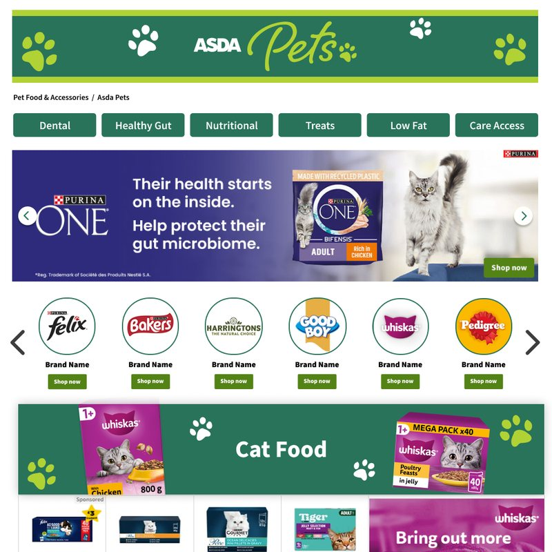

01 · The problem
An "instant price" you had to work for
- Every field, including two dates, before "Calculate Order".
- That button added to basket, so the first price was in the basket.
- People who left left no trace, so the business couldn't follow up.
Goals
More orders · a lead for every quote · fewer drop-outs
Constraints
Fixed budget · WooCommerce · small client team

01 · Synthesis and flow
From findings to a flow
Tested the current form
Five colleagues, the same three tasks. Not real customers, so it shows where the form is hard to use. Reviews cover how customers feel.
Four problems
Price hidden · unclear questions · not built for everyone · no second chance
The new flow
Split by what's being sent. Quote first, booking second.


01 · Testing
Testing the prototype


What testing showedWhat changed
"Edit quote" was easy to miss→A full button
Unsure which style their dress was→"Not sure?" panel and "from" prices
Dates were unclear→A colour-coded calendar
Desktop relied on the total bar→Continue on every step
Thumbs on mobile→Fixed bottom bar, 44px targets
05 · Browse · merchandising
Rules versus what shoppers came for
Four groups, different needs
Sales sold a takeover · merchandising owned the pages · brands paid for visibility · shoppers needed the right food fast.
Agreed
Three options pitched to senior merchandising. Navigation first, funded slots below.
What merchandising actually pushed back on



NickThompsonDesign